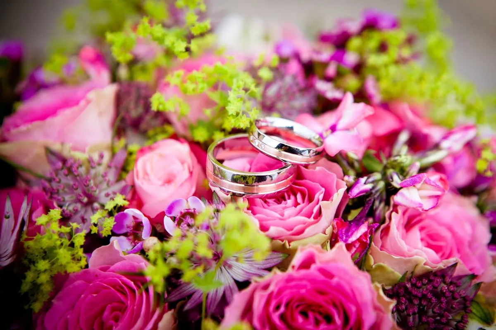

「結婚式で人とは違う演出をしたい」「ゲスト全員の記憶に残る瞬間を作りたい」
そんな新郎新婦様へ、今密かに人気を集めているのがサンドセレモニーです。
色の違う砂をグラスに重ねていく感動の演出を、年間100件以上のサンドアート制作を手がける講師が完全解説します。
この記事でわかること
サンドセレモニーとは
サンドセレモニーとは、新郎新婦が色の違う2種類の砂を1つのグラスに重ねて注ぎ入れる、結婚式の演出の一つです。近年、オリジナル結婚式を求めるカップルから注目されている人気のウェディング演出として浸透しつつあります。
起源はハワイ・古代ネイティブアメリカンの儀式
サンドセレモニーのルーツは、ハワイや古代ネイティブアメリカンの結婚儀式にあるといわれています。大地の恵みである砂を2人で重ねることで「2つの命が1つになる」ことを象徴する、神聖なセレモニーとして受け継がれてきました。
欧米の結婚式ではユニティキャンドル（2本のろうそくから1本に火を灯す儀式）と並んで定番の演出として愛されており、近年日本のウェディングシーンでも「キャンドルセレモニーに代わる新しい演出」として急速に広がっています。
基本の流れ
サンドセレモニーは、とてもシンプルな流れで進みます。
- Step1：新郎と新婦がそれぞれ違う色の砂が入った小瓶を手に持つ
- Step2：中央に置かれた空のグラスに、交互または同時に砂を注ぎ入れる
- Step3：2色の砂が重なり合い、世界に一つだけの模様が完成
- Step4：専用の蓋を閉めて、夫婦の記念品として持ち帰る
所要時間はわずか3〜5分程度。挙式中の誓いの言葉の後や、披露宴の演出として組み込むのが一般的です。
なぜ今、サンドセレモニーが選ばれるのか
ここ数年、サンドセレモニーを選ぶカップルが急増しています。その背景には、現代の結婚式に求められる3つのキーワードがあります。
理由1：「個性」を表現できる
定番のキャンドルサービスやケーキカットでは物足りない——そんな新郎新婦に選ばれているのがサンドセレモニーです。選ぶ砂の色に2人の物語を込められるのが最大の魅力。
「新郎の好きな海の青」と「新婦の好きな桜のピンク」、「2人が出会った季節の色」など、配色にストーリーを持たせることで、オリジナリティあふれる結婚式の演出アイデアが実現します。
理由2：ゲスト参加型にもできる
最近は両家両親やゲスト全員が参加する形にアレンジするカップルも増えています。列席者一人ひとりが少しずつ砂を注ぎ入れることで、「みんなで作り上げた結婚式」という一体感が生まれます。
とくに家族婚・少人数婚のカップルには、ゲスト全員との距離が近い演出として大変好評です。
理由3：形に残る「一生もの」の記念品になる
結婚式の演出の多くは、その場限りで終わってしまいます。しかしサンドセレモニーは、完成した砂のグラスがそのまま2人の家のインテリアになるのが大きな魅力。
結婚記念日のたびに夫婦で見返したり、お子さんが生まれたら「これはパパとママが結婚した日に作ったんだよ」と語り継いだり——一生ものの宝物として残せるのです。
サンドセレモニーの演出アイデア5選
実際にどんな演出ができるのか、年間多数のサンドセレモニー制作を手がけてきた経験から、おすすめのアレンジを5つご紹介します。
アイデア1：新郎新婦の2色ブレンド（ベーシック）
最もシンプルで人気の高い演出が、新郎新婦が1色ずつ担当する2色ブレンドスタイルです。2人がそれぞれお好きな色を選び、同時または交互に注ぎ入れます。
2色が層を作って重なっていく様子は、ゲストから見ても非常に美しく写真映えも抜群。誓いの言葉の直後に行うと、愛の誓いが「形」として目に見えるようになり、感動が一層深まります。
アイデア2：両家両親との3世代セレモニー
新郎新婦+両家両親の合計6名で行うセレモニーも人気です。新郎父・新郎母・新郎・新婦・新婦母・新婦父、それぞれが違う色の砂を持ち、順番に注ぎ入れていきます。
「両家が一つの家族になる」という象徴的な演出で、感動的な涙のシーンが生まれることも。親御さまへの感謝を伝える場面としても最適な、ゲスト参加型結婚式の入り口になる演出です。
アイデア3：ゲスト全員参加型セレモニー
家族婚・少人数婚にぴったりなのが、ゲスト全員が少しずつ砂を注ぎ入れる演出です。列席者一人ひとりが担当の色を持って、順番に砂を重ねていきます。
完成した作品には「ゲスト全員の色」が込められているので、結婚式の思い出をそのまま形に残せる素敵な記念品になります。10〜30名規模の結婚式に特におすすめです。
アイデア4：子どもと一緒にファミリーセレモニー
お子さまがいるカップルのための再婚・パパママ婚には、お子さまも一緒に参加するファミリーセレモニーがおすすめ。新郎新婦とお子さまが、それぞれの色の砂を重ねていきます。
「家族になる瞬間」を目に見える形で残せる感動の演出として、再婚カップルや授かり婚のお2人から絶大な支持を得ています。
アイデア5：海外挙式スタイル（ビーチウェディング）
海外挙式・リゾート婚では、現地の砂浜の砂を使ったサンドセレモニーが人気です。式を挙げた場所の砂を記念に持ち帰ることで、旅の思い出ごと形に残せます。
ハワイ・沖縄・グアムなどのビーチウェディングでは定番の演出になっており、その土地ならではの色合いが世界に一つだけの宝物になります。
サンドセレモニー、お見積り・ご相談はLINEで♪
お見積り・空き状況のご確認はLINEで気軽に♪
通常2営業日以内にご返信いたします。
準備の流れ
サンドセレモニーを結婚式に取り入れる場合、挙式3ヶ月前からの準備が理想的です。実際の流れをご紹介します。
打ち合わせ（挙式3ヶ月前〜）
LINEまたはZoomで初回打ち合わせ。挙式日・式場・ゲスト人数・ご希望の演出スタイルをヒアリングします。2人の馴れ初めやテーマカラーもお聞かせください。
デザイン決定（挙式2ヶ月前）
色の組み合わせ・グラスのサイズ・参加人数に合わせた砂量を決定。サンプル画像をお送りするので、イメージを膨らませながらお選びいただけます。
材料手配・事前発送（挙式2週間前）
人数分のカラー砂・グラス・ファネル（注ぎ口）・専用蓋を一式ご用意。挙式2週間前までにご指定の場所へお届けします。
当日進行サポート（ご希望の場合）
ご希望の方には、当日式場への同行・進行サポートも承ります。司会者との連携もこちらで進めますので、新郎新婦様は安心して当日を迎えられます。
費用の目安
サンドセレモニーの費用は、セット内容や参加人数によって変動します。一般的な料金の目安はこちらです。
| ベーシックセット | 30,000円〜 （新郎新婦2名分・カラー砂2色・グラス・蓋・ファネル） |
|---|---|
| 人数分セット（3〜6名） | 45,000円〜 両家両親参加型など |
| ゲスト全員参加型（〜30名） | 65,000円〜 小瓶・装飾アイテム込み |
| 装飾込みプラン | +10,000円〜 テーブル装花・ウェルカムボード連動 |
| 当日進行サポート | 別途お見積り 地域により交通費実費 |
| 送料 | 全国一律2,500円（北海道・沖縄別途） |
上記はあくまで目安です。オーダーメイドで細かなアレンジも承りますので、まずはお気軽にご相談ください。
よくある質問
サンドセレモニーには何人分の砂が必要ですか？
新郎新婦の2名分が基本ですが、両家両親を加えた6名・ゲスト全員参加型など人数に合わせて柔軟にご用意します。10名を超える場合でも事前にご相談いただければ、十分な砂量をお届けします。
式場への持ち込みは可能ですか？
ほとんどの式場で持ち込みが可能です。事前に式場のプランナーさんへ「サンドセレモニー用の砂とグラスを持ち込みたい」とお伝えいただくとスムーズです。持ち込み料が必要な場合のご相談にも応じます。
作ったサンドセレモニーの作品はどう飾ればいいですか？
完成後は専用の蓋とインテリア台で、リビングや寝室に飾っていただけます。砂が動かないよう接着加工をすれば、半永久的に結婚式当日の感動をそのままの形で残せます。結婚記念日のたびに見返す夫婦も多いです。
LINEで気軽に相談できますか？
はい、LINEで「サンドセレモニー相談」とお送りください。挙式日・ゲスト人数・ご希望のイメージをお伺いして、最適なプランをご提案します。通常2営業日以内にご返信しますので、挙式3ヶ月前までのご相談がおすすめです。
お申し込み方法
お申し込みはとっても簡単。LINEで「サンドセレモニー相談」とお送りください。挙式日・ゲスト人数・ご希望のイメージをお伺いしてから、最適なプランをご提案します。全国対応・オーダーメイド可。一生の思い出に、世界に一つだけの演出を。
結婚式サンドセレモニーのご相談
ベーシックセット 30,000円〜｜全国対応｜オーダーメイドOK
LINEで「サンドセレモニー相談」と送るだけ！

原野 玲未REMI HARANO
サンドアート講師 / Webデザイナー / 5児の母
福岡県在住。日本サンドアート協会認定講師として年間100件以上のワークショップを開催。サンドセレモニーのオーダーメイド制作・当日サポートも全国対応しています。